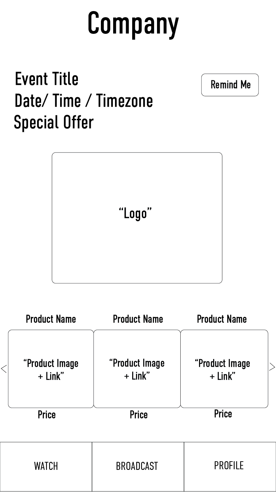
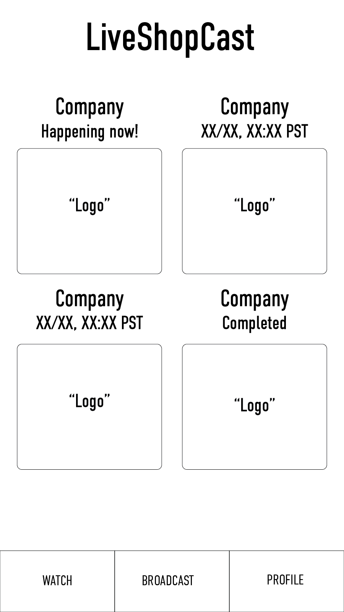
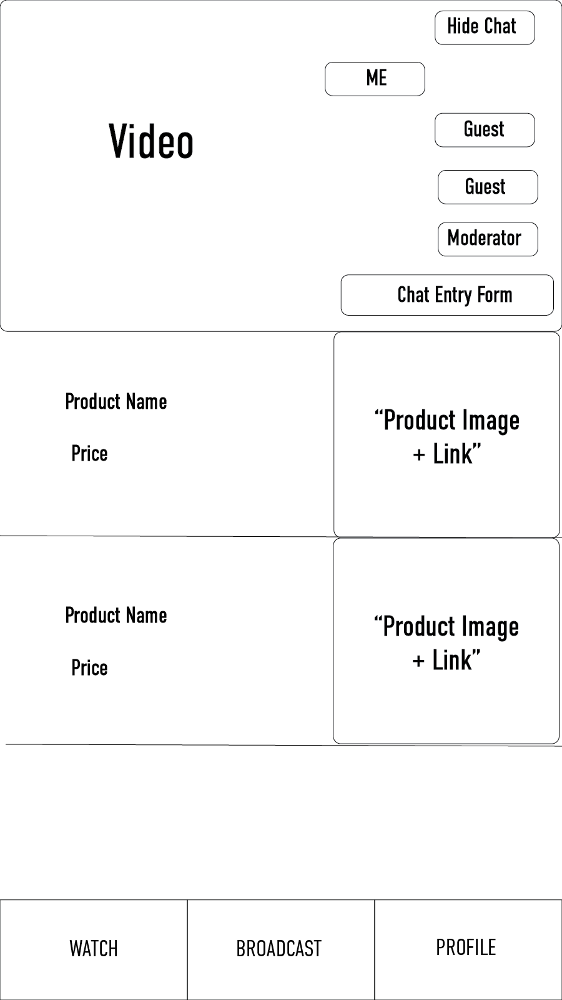

LiveShopCast (Mobile UI)
LiveShopCast was my first experience developing a UI for a company "in the wild". I learned a lot from this project about how to improve design while maneuvering as a designer within the organization to create the best possible product.
Goals: To improve the mobile user experience for uZoom's LiveShopCast.
Constraints:
Constraints: A lack of time and resources. Working within an organization that did not value or fully understands UX design.
Outcomes: A great improvement to the mobile experience. The design is still used by the company and is available on Apple and Android app stores.
Usability Testing: Upon, my first day at uZoom I knew that the mobile UI would be a problem. However, because I was the newest employee I didn't know how I could bring up this huge design flaw to my superiors. So, when my boss finally asked me to do some user testing on the UI, I jumped at the opportunity to dive into this problem space. Through direct one-on-one user testing as well as surveys, I identified the key usability problems and made an effective case for re-design. Here is an example of some of the painful interactions I found in the platform when I started.

Ideation and Experience Mapping: While the executives were convinced and wanted me to move forward with the design, the CTO (who I would be working with directly) was not convinced of the need for a re-design. He had come up with the original design and was attached. To help him see the design with fresh eyes I organized an experience mapping exercise. The point of the exercise is to determine what a user would be "thinking", "feeling", and "doing" during each micro interaction of the experience. The exercise was a success. Seeing the design from the perspective of an user, the CTO was now on board and we could get to work on the new design!

Information Architecture: In conjunction with the development of lo-fidelity wireframes. I employed paper prototyping as a way to test the IA of my design as well as explain the overall thought process to my superiors. This was a very effective way to put my ideas out into reality and test the experience.

Early Wireframes: In conjunction with the development of the IA, I created several versions of lo-fi wireframes. Every navigation item is clearly thought through and was discussed in depth with my CTO. The goal was to create the skeleton of a UI that was simple effective and easy to use.



Final Steps / Look and Feel: After the lo-fi wireframes were finished and the navigation was finalized it came time to polish the design and put together a look and feel for the app. This phase of the design was not done by me in solidarity. To relieve me of my massive workload and expectations the CEO decided to hire a part-time visual designer to help me finish the final project. In conjunction with my new design partner, we decided up colors, icons, and overall look and feel. In the end, I am very happy with what I was able to accomplish in such a short time. I am also very thankful for the valuable skills I developed, especially regarding working in real-world scenarios under constraints of time, personnel, and personality.